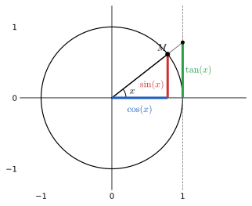
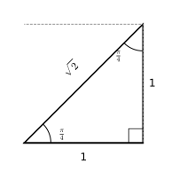
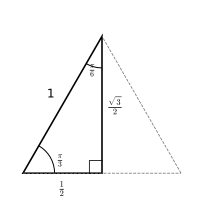

Chapitre 4 : Trigonométrie
Où il y a la matière, il y a la géométrie.
Pour compléter le chapitre précédent consacré aux fonctions usuelles, un chapitre à part consacré à une catégorie de fonctions qu’il est tout aussi indispensable de connaître sur le bout des doigts : les fonctions trigonométriques. On en profitera pour refaire le point sur l’interprétation géométrique des cosinus, sinus, et autres tangentes, qu’il faut absolument maîtriser pour être capable notamment de résoudre des équations trigonométriques efficacement. On profitera également de ce chapitre pour appliquer nos connaissances sur les réciproques aux fonctions trigonométriques, et ainsi ajouter à notre catalogue de fonctions usuelles trois fonctions supplémentaires : les fonctions circulaires réciproques.
Objectifs du chapitre :
- capacité à utiliser un cercle trigonométrique efficacement ;
- connaissance des multiples formules de trigonométrie, ou du moins capacité à toutes les retrouver rapidement ;
- connaissance des dérivées et représentations graphiques des fonctions trigonométriques et de leurs réciproques.
1 Rappels de trigonométrie
1.1 Cercle trigonométrique
Définition 1. Le cercle trigonométrique, dans un repère orthonormé du plan, est le cercle de centre \(O\) (origine du repère) et de rayon \(1\). À tout réel \(x\), on associe un point \(M\) du cercle trigonométrique en parcourant le cercle sur une distance \(x\) à partir du point \((1,0)\), et \(x\) est appelé mesure en radians de l’angle orienté \((\overrightarrow{i}, \overrightarrow{OM})\). L’abscisse et l’ordonnée du point \(M\) associé à \(x\) sont appelées respectivement cosinus et sinus de ce réel. On définit par ailleurs la tangente quand c’est possible, c’est-à-dire si \(x \neq \frac{\pi}{2} + k\pi\), \(k \in \mathbb{Z}\), par \[ \tan(x) = \frac{\sin(x)}{\cos(x)}. \] Pour une interprétation géométrique de la tangente (expliquant d’ailleurs le nom de tangente), cf. le dessin ci-dessous.

Remarque 1. Le repérage du cercle trigonométrique suppose le choix d’une orientation sur ce cercle. On appelle sens trigonométrique (ou positif, ou encore direct) le sens opposé à celui des aiguilles d’une montre (ce dernier étant aussi appelé sens indirect ou négatif).
Proposition 1. Valeurs remarquables des lignes trigonométriques :
| \(x\) | \(0\) | \(\frac{\pi}{6}\) | \(\frac{\pi}{4}\) | \(\frac{\pi}{3}\) | \(\frac{\pi}{2}\) |
|---|---|---|---|---|---|
| \(\cos x\) | \(1\) | \(\frac{\sqrt{3}}{2}\) | \(\frac{\sqrt{2}}{2}\) | \(\frac{1}{2}\) | \(0\) |
| \(\sin x\) | \(0\) | \(\frac{1}{2}\) | \(\frac{\sqrt{2}}{2}\) | \(\frac{\sqrt{3}}{2}\) | \(1\) |
| \(\tan x\) | \(0\) | \(\frac{\sqrt{3}}{3}\) | \(1\) | \(\sqrt{3}\) | non définie |
Démonstration. Pour \(0\) et \(\frac{\pi}{2}\), il suffit de regarder le cercle trigonométrique. Pour \(\frac{\pi}{4}\), on obtient les valeurs facilement en se plaçant dans un demi-carré de côté \(1\) (figure de gauche ci-dessous) : l’hypoténuse du triangle rectangle a pour longueur \(\sqrt{2}\), donc le cosinus comme le sinus de chacun des deux angles de mesure \(\frac{\pi}{4}\) valent \(\frac{1}{\sqrt{2}} = \frac{\sqrt{2}}{2}\). Pour \(\frac{\pi}{3}\) et \(\frac{\pi}{6}\), on se place dans un demi-triangle équilatéral de côté \(1\) (figure de droite ci-dessous). Les longueurs des trois côtés du triangle sont donc \(1\), \(\frac{1}{2}\) et \(\frac{\sqrt{3}}{2}\) (un petit coup de théorème de Pythagore), dont on déduit sans difficulté les valeurs des lignes trigonométriques.

Proposition 2. Propriétés de symétrie du cosinus, du sinus et de la tangente :
| \(\cos(x+2\pi) = \cos x\) | \(\sin(x+2\pi) = \sin x\) | \(\tan(x+2\pi) = \tan x\) |
| \(\cos(x+\pi) = -\cos x\) | \(\sin(x+\pi) = -\sin x\) | \(\tan(x+\pi) = \tan x\) |
| \(\cos(-x) = \cos x\) | \(\sin(-x) = -\sin x\) | \(\tan(-x) = -\tan x\) |
| \(\cos(\pi-x) = -\cos x\) | \(\sin(\pi-x) = \sin x\) | \(\tan(\pi-x) = -\tan x\) |
| \(\cos\left(x+\frac{\pi}{2}\right) = -\sin x\) | \(\sin\left(x+\frac{\pi}{2}\right) = \cos x\) | \(\tan\left(x+\frac{\pi}{2}\right) = -\frac{1}{\tan x}\) |
| \(\cos\left(\frac{\pi}{2}-x\right) = \sin x\) | \(\sin\left(\frac{\pi}{2}-x\right) = \cos x\) | \(\tan\left(\frac{\pi}{2}-x\right) = \frac{1}{\tan x}\) |
Démonstration. Les deux premières lignes correspondent à des histoires de périodicité des fonctions trigonométriques, mais elles découlent facilement d’une interprétation sur le cercle trigonométrique : ce cercle ayant pour rayon \(1\), il a pour périmètre \(2\pi\), donc les points correspondant à \(x\) et à \(x+2\pi\) sont confondus sur le cercle. Le point correspondant à \(x+\pi\) est symétrique de celui correspondant à \(x\) par rapport à l’origine du repère (on fait un demi-tour). Ensuite, on a les symétries par rapport aux axes : par construction, les points correspondant à \(x\) et à \(-x\) sont symétriques par rapport à l’axe des abscisses, d’où le changement de signe du sinus et pas du cosinus. En composant les deux symétries précédentes, \(x\) et \(\pi-x\) sont symétriques par rapport à l’axe des ordonnées, cette fois le cosinus change de signe mais pas le sinus. Enfin, \(\frac{\pi}{2}-x\) est symétrique de \(x\) par rapport à la droite \(y=x\) (je vous laisse y réfléchir), ce qui échange logiquement l’abscisse et l’ordonnée du point, donc le cosinus et le sinus. L’avant-dernière ligne correspond aux mêmes formules que pour la dernière, mais en remplaçant \(x\) par \(-x\) (composition d’une symétrie par rapport à l’axe des abscisses puis par rapport à la droite \(y=x\)). Cette avant-dernière ligne est essentielle pour comprendre les formules de changement de repère orthonormal dans le plan.
1.2 Formulaire de trigonométrie
Proposition 3. Pour tout réel \(x\), \(\sin^2 x + \cos^2 x = 1\).
Démonstration. Soit \(M\) le point associé à \(x\) sur le cercle trigonométrique. La distance \(OM\), qui vaut \(1\), est égale à \(\sqrt{\cos^2 x + \sin^2 x}\), ce qui élevé au carré donne notre égalité.
Les formules suivantes sont toutes à connaître parfaitement et surtout à ne pas confondre les unes avec les autres. Nous verrons un peu plus tard comment les retenir plus facilement à l’aide des exponentielles complexes.
Proposition 4. Formules d’addition :
- \(\cos(a+b) = \cos(a)\cos(b) - \sin(a)\sin(b)\)
- \(\sin(a+b) = \sin(a)\cos(b) + \cos(a)\sin(b)\)
- \(\tan(a+b) = \dfrac{\tan(a)+\tan(b)}{1-\tan(a)\tan(b)}\)
- \(\cos(a-b) = \cos(a)\cos(b) + \sin(a)\sin(b)\)
- \(\sin(a-b) = \sin(a)\cos(b) - \cos(a)\sin(b)\)
- \(\tan(a-b) = \dfrac{\tan(a)-\tan(b)}{1+\tan(a)\tan(b)}\)
Démonstration. Soient \(M\) et \(N\) les points du cercle trigonométrique de coordonnées respectives \((\cos(a), \sin(a))\) et \((\cos(a+b), \sin(a+b))\) et \(M'\) l’image de \(M\) par rotation autour de l’origine d’angle \(\frac{\pi}{2}\).

Le triplet \((O, \overrightarrow{OM}, \overrightarrow{OM'})\) est un repère orthonormal direct du plan. Les coordonnées de \(N\) dans ce repère sont \((\cos(b), \sin(b))\) (puisque \(N\) appartient toujours au cercle trigonométrique dans ce nouveau repère, et \((\overrightarrow{OM}, \overrightarrow{ON}) = a+b-a = b\)), donc \[ \begin{aligned} \overrightarrow{ON} &= \cos(b)\,\overrightarrow{OM} + \sin(b)\,\overrightarrow{OM'} \\ &= \cos(b)\big(\cos(a)\,\overrightarrow{i} + \sin(a)\,\overrightarrow{j}\big) + \sin(b)\big(-\sin(a)\,\overrightarrow{i} + \cos(a)\,\overrightarrow{j}\big) \\ &= \big(\cos(a)\cos(b) - \sin(a)\sin(b)\big)\overrightarrow{i} + \big(\sin(a)\cos(b) + \cos(a)\sin(b)\big)\overrightarrow{j}. \end{aligned} \] Comme on sait par ailleurs, par définition du point \(N\), que ces coordonnées sont égales à \((\cos(a+b), \sin(a+b))\), une petite identification donne les formules d’addition du sinus et du cosinus. On a ensuite \[ \tan(a+b) = \frac{\sin(a+b)}{\cos(a+b)} \] \[ = \frac{\sin(a)\cos(b) + \cos(a)\sin(b)}{\cos(a)\cos(b) - \sin(a)\sin(b)} \] \[ = \frac{\frac{\sin(a)}{\cos(a)} + \frac{\sin(b)}{\cos(b)}}{1 - \frac{\sin(a)\sin(b)}{\cos(a)\cos(b)}} \] \[ = \frac{\tan(a)+\tan(b)}{1-\tan(a)\tan(b)} \] en divisant numérateur et dénominateur par le produit \(\cos(a)\cos(b)\).
Pour obtenir les formules de soustraction, on reprend les formules précédentes en remplaçant \(b\) par \(-b\).
Exemple : Ces formules permettent de calculer les valeurs exactes des lignes trigonométriques d’angles qui peuvent s’exprimer comme sommes ou différences d’angles classiques, par exemple \(\frac{\pi}{12}\) : on utilise le fait que \(\frac{\pi}{12} = \frac{\pi}{3} - \frac{\pi}{4}\), donc \[ \cos\frac{\pi}{12} = \cos\frac{\pi}{3}\cos\frac{\pi}{4} + \sin\frac{\pi}{3}\sin\frac{\pi}{4} = \frac{\sqrt{6}+\sqrt{2}}{4}. \] De même, \[ \sin\frac{\pi}{12} = \frac{\sqrt{3}}{2}\cdot\frac{\sqrt{2}}{2} - \frac{1}{2}\cdot\frac{\sqrt{2}}{2} = \frac{\sqrt{6}-\sqrt{2}}{4}. \]
Proposition 5. Formules de duplication :
- \(\cos(2a) = \cos^2 a - \sin^2 a = 2\cos^2 a - 1 = 1 - 2\sin^2 a\)
- \(\sin(2a) = 2\cos a \sin a\)
- \(\tan(2a) = \dfrac{2\tan(a)}{1-\tan^2(a)}\)
Démonstration. Ce ne sont que des cas particuliers des formules d’addition, en posant \(b=a\).
Proposition 6. Formules de triplication :
- \(\cos(3x) = 4\cos^3(x) - 3\cos(x)\)
- \(\sin(3x) = 3\sin(x) - 4\sin^3(x)\)
Démonstration. Pour obtenir \(\cos(3a)\), on applique la formule d’addition à \(a\) et \(2a\) : \[ \begin{aligned} \cos(3a) &= \cos(2a)\cos(a) - \sin(2a)\sin(a) \\ &= 2\cos^3(a) - \cos(a) - 2\cos(a)\sin^2(a) \\ &= 2\cos^3(a) - \cos(a) - 2\cos(a)\big(1-\cos^2(a)\big) \\ &= 4\cos^3(a) - 3\cos(a). \end{aligned} \] Méthode identique pour la triplication du sinus.
Remarque 2. On peut calculer les valeurs de \(\cos(na)\) et \(\sin(na)\) de proche en proche de cette manière, mais on verra une méthode plus efficace utilisant les nombres complexes.
Proposition 7. Transformations de sommes en produits (et vice versa) :
- \(\cos(a)\cos(b) = \dfrac{1}{2}\big(\cos(a+b) + \cos(a-b)\big)\)
- \(\sin(a)\cos(b) = \dfrac{1}{2}\big(\sin(a+b) + \sin(a-b)\big)\)
- \(\sin(a)\sin(b) = \dfrac{1}{2}\big(\cos(a-b) - \cos(a+b)\big)\)
- \(\cos(p) + \cos(q) = 2\cos\left(\dfrac{p+q}{2}\right)\cos\left(\dfrac{p-q}{2}\right)\)
- \(\cos(p) - \cos(q) = -2\sin\left(\dfrac{p+q}{2}\right)\sin\left(\dfrac{p-q}{2}\right)\)
- \(\sin(p) + \sin(q) = 2\sin\left(\dfrac{p+q}{2}\right)\cos\left(\dfrac{p-q}{2}\right)\)
- \(\sin(p) - \sin(q) = 2\cos\left(\dfrac{p+q}{2}\right)\sin\left(\dfrac{p-q}{2}\right)\)
Démonstration. Rien de compliqué, par exemple \(\cos(a+b) + \cos(a-b) = \cos a\cos b - \sin a\sin b + \cos a\cos b + \sin a\sin b = 2\cos a\cos b\) en exploitant les formules d’addition. On obtient de même les deux formules suivantes, puis les quatre dernières s’obtiennent directement en partant du membre de droite et en utilisant les trois premières (il suffit en gros de trouver des valeurs de \(a\) et \(b\) vérifiant \(a+b=p\) et \(a-b=q\), ce qui donne facilement \(a = \frac{p+q}{2}\) et \(b = \frac{p-q}{2}\), les formules en découlent).
Exercice : Exprimer en fonction de \(t = \tan\left(\frac{x}{2}\right)\) les valeurs de \(\cos(x)\), \(\sin(x)\) et \(\tan(x)\).
Il s’agit d’un exercice classique, qui a des répercussions notamment dans le cadre du calcul de certaines primitives de fonctions trigonométriques. La plus simple des trois formules à obtenir est celle de la tangente : il suffit d’appliquer la formule de duplication en posant \(2a = x\) et donc \(a = \frac{x}{2}\) pour trouver \[ \tan(x) = \frac{2t}{1-t^2} \] (pour toutes les valeurs de \(x\) pour lesquelles les deux tangentes sont définies, bien entendu). On peut ensuite en déduire la valeur de \(\cos(x)\) en passant par les deux expressions de la dérivée de la fonction tangente : \[ 1+\tan^2(x) = 1 + \frac{4t^2}{(1-t^2)^2} = \frac{(1-t^2)^2 + 4t^2}{(1-t^2)^2} = \frac{(1+t^2)^2}{(1-t^2)^2}, \] donc \[ \cos^2(x) = \frac{1}{1+\tan^2(x)} = \frac{(1-t^2)^2}{(1+t^2)^2}. \] Reste à connaître le signe de tout ça avant de simplifier abusivement les carrés : en supposant \(x \in [-\pi, \pi]\), on aura \(\cos(x) > 0 \Leftrightarrow x \in \left]-\frac{\pi}{2}, \frac{\pi}{2}\right[\), ce qui est exactement la condition pour laquelle \(\frac{x}{2} \in \left]-\frac{\pi}{4}, \frac{\pi}{4}\right[\), donc \(t \in\, ]-1, 1[\) et \(1-t^2 > 0\). Autrement dit, \(\cos(x)\) est toujours du même signe que \(1-t^2\), ce qui permet simplement d’écrire que \[ \cos(x) = \frac{1-t^2}{1+t^2} \] (le dénominateur étant quant à lui toujours positif). Pas besoin de s’embêter autant pour obtenir la dernière formule : \[ \sin(x) = \tan(x)\times\cos(x) = \frac{2t}{1+t^2}. \]
1.3 Résolution d’équations trigonométriques
Définition 2. Soit \(\theta \in \mathbb{R}\), on dit qu’un réel \(x\) est congru à \(\alpha\) modulo \(\theta\) si \(x = \alpha + k\theta\), avec \(k \in \mathbb{Z}\). On le note \(x \equiv \alpha\ [\theta]\).
Exemple : On peut ainsi écrire \(x \equiv \theta\ [2\pi]\) pour indiquer que le réel \(x\) correspond sur le cercle trigonométrique au même point que l’angle \(\theta\). Cette notation a en fait initialement été créée et utilisée en arithmétique, donc avec des congruences entières. Ainsi, écrire qu’un entier \(n\) vérifie \(n \equiv 1\ [2]\) signifie tout simplement que \(n\) est un entier impair.
Remarque 3. On peut effectuer sur les congruences (qui ne sont rien d’autre que des égalités déguisées) les opérations suivantes :
- addition d’une constante des deux côtés (sans toucher à ce qui est dans le crochet) ;
- multiplication par une constante (y compris ce qui est dans le crochet).
Ainsi, si \(2x + \pi \equiv \frac{\pi}{2}\ [2\pi]\), on pourra écrire \(2x \equiv -\frac{\pi}{2}\ [2\pi]\), puis \(x \equiv -\frac{\pi}{4}\ [\pi]\).
Proposition 8. L’équation \(\cos(x) = \cos(\theta)\) a pour solutions \(x \equiv \theta\ [2\pi]\) et \(x \equiv -\theta\ [2\pi]\).
L’équation \(\sin(x) = \sin(\theta)\) a pour solutions \(x \equiv \theta\ [2\pi]\) et \(x \equiv \pi-\theta\ [2\pi]\).
Exemples : L’équation \(\cos(x) = \frac{1}{2}\) a pour solutions \(x \equiv \frac{\pi}{3}\ [2\pi]\) et \(x \equiv -\frac{\pi}{3}\ [2\pi]\). L’inéquation \(\sin(x) > \frac{\sqrt{3}}{2}\) a pour solutions \(x \in \left]\frac{\pi}{3}, \frac{2\pi}{3}\right[\) si on limite la résolution à l’intervalle \([0, 2\pi]\). Si on veut résoudre dans \(\mathbb{R}\), il faudrait écrire \[ S = \bigcup_{k\in\mathbb{Z}} \left]\frac{\pi}{3} + 2k\pi,\ \frac{2\pi}{3} + 2k\pi\right[. \]
Exercice : Résoudre les équations suivantes :
- \(\cos(3x) = \dfrac{1}{2}\)
- \(\sin\left(x+\dfrac{\pi}{2}\right) = 1\)
- \(\tan(x) = 2\cos(x)\)
- \(\sin(x) + \sin(3x) = 0\)
Solutions :
- On écrit simplement \(3x \equiv \pm\frac{\pi}{3}\ [2\pi]\), soit \(x \equiv \pm\frac{\pi}{9}\ \left[\frac{2\pi}{3}\right]\).
- On peut par exemple écrire \(x + \frac{\pi}{2} \equiv \frac{\pi}{2}\ [2\pi]\), soit \(x \equiv 0\ [2\pi]\), ou encore utiliser le fait que \(\sin\left(x+\frac{\pi}{2}\right) = \cos(x)\) pour obtenir l’équation équivalente \(\cos(x) = 1\) (qui donne évidemment les mêmes solutions).
- Le plus simple est d’écrire \(\frac{\sin(x)}{\cos(x)} = 2\cos(x)\), soit \(\sin(x) = 2\cos^2(x) = 2 - 2\sin^2(x)\). En posant \(X = \sin(x)\), on se ramène donc à l’équation \(2X^2 + X - 2 = 0\), qui a pour discriminant \(\Delta = 1 + 16 = 17\), et admet comme racines \(X_1 = \frac{-1-\sqrt{17}}{4}\), qui est strictement inférieure à \(-1\) (puisque \(\sqrt{17} > 4\)) donc n’est pas une valeur valable pour un sinus, et \(X_2 = \frac{-1+\sqrt{17}}{4}\), qui appartient bien à \([-1, 1]\). Il existe donc un angle \(\theta\) tel que \(\sin(\theta) = X_2\), et les solutions de l’équation initiale sont alors \(x \equiv \theta\ [2\pi]\) et \(x \equiv \pi-\theta\ [2\pi]\).
- Une possibilité brutale est d’écrire \[ \sin(x) + \sin(3x) = \sin(x) + 3\sin(x) - 4\sin^3(x) = 4\sin(x)\big(1-\sin^2(x)\big), \] les solutions vérifient donc \(\sin(x) = 0\), \(\sin(x) = 1\) ou \(\sin(x) = -1\), ce qui donne \(x \equiv 0\ \left[\frac{\pi}{2}\right]\). Autre possibilité, utiliser une formule de transformation somme-produit pour ramener l’équation à \(2\sin(2x)\cos(-x) = 0\), soit \(\sin(2x) = 0\) ou \(\cos(x) = 0\) (la fonction \(\cos\) étant paire). Comme \(\sin(2x) = 2\sin(x)\cos(x)\), on doit en fait avoir \(\sin(x) = 0\) ou \(\cos(x) = 0\), ce qui donne bien les solutions trouvées ci-dessus.
2 Fonctions trigonométriques
2.1 Fonctions directes
Proposition 9. La fonction cosinus est définie sur \(\mathbb{R}\) par \(x \mapsto \cos(x)\). Elle est paire et \(2\pi\)-périodique, continue et dérivable, et sa dérivée est égale à \(-\sin(x)\). Sur l’intervalle \([-\pi, \pi]\), son tableau de variations est le suivant :
| \(x\) | \(-\pi\) | \(-\frac{\pi}{2}\) | \(0\) | \(\frac{\pi}{2}\) | \(\pi\) | ||||
|---|---|---|---|---|---|---|---|---|---|
| \(\cos x\) | \(-1\) | \(\nearrow\) | \(0\) | \(\nearrow\) | \(1\) | \(\searrow\) | \(0\) | \(\searrow\) | \(-1\) |
La courbe bien connue du cosinus (en bleu) avec dans le même repère celle du sinus que nous allons immédiatement étudier (en rouge) :
Démonstration. La périodicité et la parité découlent des propriétés \(\cos(x+2\pi) = \cos x\) et \(\cos(-x) = \cos x\). Le calcul de dérivée peut s’effectuer en revenant au taux d’accroissement et en utilisant des encadrements exploitant la définition géométrique des lignes trigonométriques, nous verrons cette démonstration en exercice.
Proposition 10. La fonction sinus est définie sur \(\mathbb{R}\) par \(x \mapsto \sin(x)\). Elle est impaire, \(2\pi\)-périodique, continue et dérivable, sa dérivée est la fonction cosinus, et voici son tableau de variations sur \([-\pi, \pi]\) :
| \(x\) | \(-\pi\) | \(-\frac{\pi}{2}\) | \(0\) | \(\frac{\pi}{2}\) | \(\pi\) | ||||
|---|---|---|---|---|---|---|---|---|---|
| \(\sin x\) | \(0\) | \(\searrow\) | \(-1\) | \(\nearrow\) | \(0\) | \(\nearrow\) | \(1\) | \(\searrow\) | \(0\) |
Démonstration. Mêmes remarques que pour le cosinus.
Proposition 11. La fonction tangente est définie sur \(\mathbb{R}\setminus\left\{\frac{\pi}{2} + k\pi \mid k \in \mathbb{Z}\right\}\) par \(x \mapsto \tan(x)\). Elle est impaire, \(\pi\)-périodique, continue et dérivable sur son domaine de définition, et \[ \tan' = 1 + \tan^2 = \frac{1}{\cos^2}. \] D’où le tableau de variations suivant sur \(\left]-\frac{\pi}{2}, \frac{\pi}{2}\right[\) :
| \(x\) | \(-\frac{\pi}{2}\) | \(0\) | \(\frac{\pi}{2}\) | ||
|---|---|---|---|---|---|
| \(\tan x\) | \(-\infty\) | \(\nearrow\) | \(0\) | \(\nearrow\) | \(+\infty\) |
Et une dernière courbe peut-être moins bien connue :
Démonstration. Encore une fois, tout a été vu sauf la dérivée et les limites, qui se calculent facilement. Par exemple, \[ \tan'(x) = \left(\frac{\sin}{\cos}\right)'(x) = \frac{\cos^2(x) + \sin^2(x)}{\cos^2(x)} = \frac{1}{\cos^2(x)} \] en utilisant la formule de dérivation d’un quotient. Par ailleurs, \[ 1 + \tan^2(x) = 1 + \frac{\sin^2(x)}{\cos^2(x)} = \frac{1}{\cos^2(x)}, \] d’où la deuxième forme possible.
Exercice : Étudier le plus complètement possible la fonction \(f : x \mapsto \dfrac{2\sin(x)+1}{2\cos(x)+1}\).
La fonction est définie, continue et dérivable sur \(\mathbb{R}\) privé de tous les réels pour lesquels \(\cos(x) = -\frac{1}{2}\), c’est-à-dire tous les réels \(x\) vérifiant \(x \equiv \frac{2\pi}{3}\ [2\pi]\) ou \(x \equiv \frac{4\pi}{3}\ [2\pi]\). Elle n’est ni paire ni impaire, mais \(2\pi\)-périodique, ce qui permet de réduire l’intervalle d’étude à \([-\pi, \pi]\) (privé bien sûr des deux valeurs interdites \(\frac{2\pi}{3}\) et \(\frac{4\pi}{3}\)). Sa dérivée est donnée par \[ f'(x) = \frac{2\cos(x)\big(2\cos(x)+1\big) + 2\sin(x)\big(2\sin(x)+1\big)}{\big(2\cos(x)+1\big)^2} = \frac{4 + 2\big(\cos(x)+\sin(x)\big)}{\big(2\cos(x)+1\big)^2}. \] Comme \(\cos(x)+\sin(x) \geqslant -1-1 = -2\), le numérateur de cette dérivée est toujours positif, ce qui prouve que \(f\) est croissante sur chacun de ses intervalles de définition. Elle l’est même strictement (on ne peut pas avoir simultanément \(\cos(x) = \sin(x) = -1\), donc la dérivée ne peut pas s’annuler). On calcule quelques valeurs simples supplémentaires pour compléter le tableau suivant, les limites ne posant aucun problème :
| \(x\) | \(0\) | \(\frac{\pi}{2}\) | \(\frac{2\pi}{3}\) | \(\pi\) | \(\frac{4\pi}{3}\) | \(\frac{3\pi}{2}\) | \(2\pi\) | ||||||
|---|---|---|---|---|---|---|---|---|---|---|---|---|---|
| \(f\) | \(\frac{1}{3}\) | \(\nearrow\) | \(3\) | \(\nearrow\) | \(+\infty \;\Vert\; -\infty\) | \(\nearrow\) | \(-1\) | \(\nearrow\) | \(+\infty \;\Vert\; -\infty\) | \(\nearrow\) | \(-1\) | \(\nearrow\) | \(\frac{1}{3}\) |
Et la courbe qui va avec :
2.2 Fonctions réciproques
Définition 3. La fonction \(\sin\) étant strictement croissante sur \(\left[-\frac{\pi}{2}, \frac{\pi}{2}\right]\), elle y est bijective vers l’intervalle image \([-1, 1]\). La fonction réciproque du sinus sur cet intervalle est appelée arcsinus et notée \(\arcsin\).
Proposition 12. La fonction \(\arcsin\) est impaire, définie et continue sur \([-1, 1]\) et dérivable sur \(]-1, 1[\), de dérivée \[ \arcsin'(y) = \frac{1}{\sqrt{1-y^2}}. \] Elle est strictement croissante sur son domaine de définition.
| \(x\) | \(-1\) | \(0\) | \(1\) | ||
|---|---|---|---|---|---|
| \(\arcsin\) | \(-\frac{\pi}{2}\) | \(\nearrow\) | \(0\) | \(\nearrow\) | \(\frac{\pi}{2}\) |
Démonstration. L’imparité et la croissance d’\(\arcsin\) découlent de celles du sinus via le théorème de la bijection. Pour la dérivée, appliquons la formule de dérivation d’une réciproque : \[ \arcsin'(y) = \frac{1}{\sin'(\arcsin y)} = \frac{1}{\cos(\arcsin y)}. \] La fonction \(\arcsin\) étant à valeurs dans \(\left[-\frac{\pi}{2}, \frac{\pi}{2}\right]\), et le cosinus étant positif sur cet intervalle, on a \[ \cos(\arcsin y) = \sqrt{1 - \sin^2(\arcsin y)} = \sqrt{1-y^2}, \] ce qui prouve la formule.
Remarque 4. Le fait que \(\sin(\arcsin y) = y\), utilisé dans la démonstration, est toujours vrai si \(y \in [-1, 1]\) (sinon \(\arcsin(y)\) n’existe pas). Par contre, \(\arcsin(\sin(x)) = x\) seulement si \(x \in \left[-\frac{\pi}{2}, \frac{\pi}{2}\right]\) (mais cette expression est définie quelle que soit la valeur de \(x\)). Par exemple, on aura \[ \arcsin\left(\sin\frac{3\pi}{4}\right) = \arcsin\left(\frac{\sqrt{2}}{2}\right) = \frac{\pi}{4}. \]
Définition 4. La fonction \(\cos\) est strictement décroissante sur \([0, \pi]\), elle y est donc bijective vers son intervalle image \([-1, 1]\). On définit la fonction arccosinus sur \([-1, 1]\) (notée \(\arccos\)) comme la réciproque de \(\cos\) sur cet intervalle.
Proposition 13. La fonction \(\arccos\) est continue sur \([-1, 1]\) et dérivable sur \(]-1, 1[\), de dérivée \[ \arccos'(y) = -\frac{1}{\sqrt{1-y^2}}. \] Elle est strictement décroissante sur son domaine de définition.
| \(x\) | \(-1\) | \(0\) | \(1\) | ||
|---|---|---|---|---|---|
| \(\arccos\) | \(\pi\) | \(\searrow\) | \(\frac{\pi}{2}\) | \(\searrow\) | \(0\) |
Démonstration. La preuve est totalement similaire à la précédente.
Proposition 14. Pour tout réel \(y \in [-1, 1]\), \(\arccos(y) + \arcsin(y) = \dfrac{\pi}{2}\).
Démonstration. Notons \(g : y \mapsto \arccos(y) + \arcsin(y)\). La fonction \(g\) est définie sur \([-1, 1]\), dérivable et de dérivée nulle sur \(]-1, 1[\). Elle est donc constante égale à \(g(0) = \arccos(0) + \arcsin(0) = \frac{\pi}{2} + 0 = \frac{\pi}{2}\).
Définition 5. La fonction \(\tan\) est strictement croissante sur \(\left]-\frac{\pi}{2}, \frac{\pi}{2}\right[\), elle y effectue donc une bijection vers son intervalle image \(\mathbb{R}\). La fonction arctangente est définie sur \(\mathbb{R}\) comme sa réciproque, on la note \(\arctan\).
Proposition 15. La fonction \(\arctan\) est impaire, continue et dérivable sur \(\mathbb{R}\), de dérivée \[ \arctan'(y) = \frac{1}{1+y^2}. \] Elle est strictement croissante sur \(\mathbb{R}\), avec pour limites respectives \(-\frac{\pi}{2}\) et \(\frac{\pi}{2}\) en \(-\infty\) et \(+\infty\).
| \(x\) | \(-\infty\) | \(0\) | \(+\infty\) | ||
|---|---|---|---|---|---|
| \(\arctan\) | \(-\frac{\pi}{2}\) | \(\nearrow\) | \(0\) | \(\nearrow\) | \(\frac{\pi}{2}\) |
Démonstration. Comme d’habitude, contentons-nous du calcul de la dérivée, qui est ici facile : \[ \arctan'(y) = \frac{1}{\tan'(\arctan y)} = \frac{1}{(1+\tan^2)(\arctan y)} = \frac{1}{1+y^2}. \]
Exercice : Simplifier l’expression \(\sin(\arctan(x))\).
Il faut trouver un moyen de relier les fonctions \(\sin\) et \(\tan\) et cela passe par l’écriture \[ \sin(\arctan(x)) = \tan(\arctan(x)) \times \cos(\arctan(x)) = x\cos(\arctan(x)), \] puis on exploite les deux versions de la dérivée de la tangente : \[ \cos^2(\arctan(x)) = \frac{1}{1+\tan^2(\arctan(x))} = \frac{1}{1+x^2}. \] Comme de plus \(\cos(\arctan(x))\) est toujours positif, puisque par définition \(\arctan(x) \in \left]-\frac{\pi}{2}, \frac{\pi}{2}\right[\), on peut simplement conclure que \(\cos(\arctan(x)) = \frac{1}{\sqrt{1+x^2}}\), puis \[ \sin(\arctan(x)) = \frac{x}{\sqrt{1+x^2}}. \]
Exercice : Démontrer que, \(\forall x \in \mathbb{R}\), \(\arcsin\left(\dfrac{x}{\sqrt{x^2+1}}\right) = \arctan(x)\).
Deux méthodes possibles (si on ne triche pas et qu’on n’utilise pas le petit exercice précédent).
Première méthode, la méthode « bourrine » : on pose \(f(x) = \arcsin\left(\dfrac{x}{\sqrt{x^2+1}}\right) - \arctan(x)\). Il faut déjà réussir à déterminer le domaine de définition de \(f\). En constatant que \(\forall x \in \mathbb{R}\), \(0 \leqslant x^2 < x^2+1\), on peut prendre la racine carrée pour obtenir \(|x| < \sqrt{x^2+1}\), soit \(-\sqrt{x^2+1} < x < \sqrt{x^2+1}\). On a donc toujours \(-1 < \frac{x}{\sqrt{x^2+1}} < 1\), donc \(\arcsin\left(\frac{x}{\sqrt{x^2+1}}\right)\) existe sur \(\mathbb{R}\) tout entier. Comme la fonction \(\arctan\) est également définie sur \(\mathbb{R}\), \(\mathcal{D}_f = \mathbb{R}\). La fonction est dérivable sur \(\mathbb{R}\) également puisque l’expression à l’intérieur de l’arcsinus ne prend jamais les valeurs \(-1\) et \(1\). Dérivons donc : \[ f'(x) = \frac{\sqrt{x^2+1} - \dfrac{2x^2}{2\sqrt{x^2+1}}}{x^2+1} \times \frac{1}{\sqrt{1 - \dfrac{x^2}{x^2+1}}} - \frac{1}{x^2+1} \] \[ = \frac{x^2+1-x^2}{(x^2+1)^{3/2}} \times \frac{\sqrt{x^2+1}}{\sqrt{x^2+1-x^2}} - \frac{1}{x^2+1} \] \[ = \frac{\sqrt{x^2+1}}{(x^2+1)^{3/2}} - \frac{1}{x^2+1} = 0. \] La fonction \(f\) est donc constante. Comme \(f(0) = \arcsin(0) - \arctan(0) = 0\), \(f\) est la fonction nulle, ce qui prouve l’égalité demandée.
Deuxième méthode : on pose \(x = \tan(\theta)\), avec \(\theta \in \left]-\frac{\pi}{2}, \frac{\pi}{2}\right[\) (on peut toujours, la fonction \(\tan\) étant bijective de cet intervalle sur \(\mathbb{R}\)). On a bien évidemment \(\arctan(\tan(\theta)) = \theta\) sur cet intervalle (ce ne serait pas vrai pour un \(\theta\) quelconque), et par ailleurs \[ \frac{x}{\sqrt{x^2+1}} = \frac{\tan(\theta)}{\sqrt{1+\tan^2(\theta)}} = \frac{\tan(\theta)}{\sqrt{\frac{1}{\cos^2(\theta)}}}. \] Comme \(\cos(\theta)\) est positif sur l’intervalle considéré, \(\frac{x}{\sqrt{x^2+1}} = \tan(\theta)\cos(\theta) = \sin(\theta)\). Et comme on est justement dans l’intervalle où \(\arcsin(\sin(\theta)) = \theta\) (la vie est bien faite), on trouve \(\arcsin\left(\frac{x}{\sqrt{x^2+1}}\right) = \theta\), ce qui prouve l’égalité.